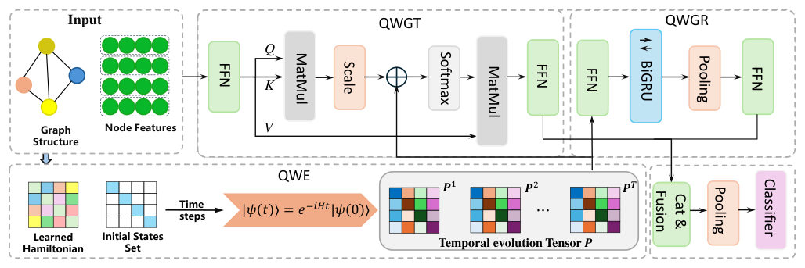
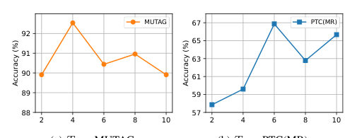
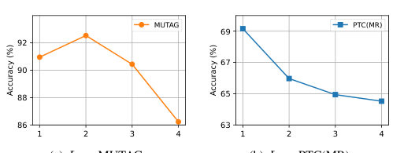
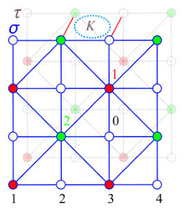
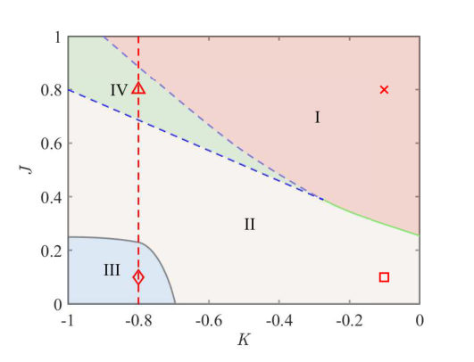
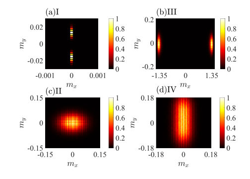
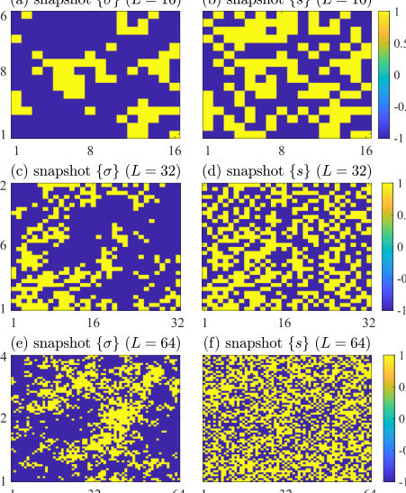
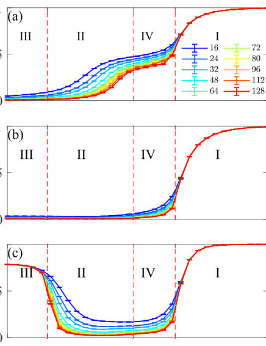

← Index · ← Previous · Next →
Authors: Weizhou Wang, Jonathan Weare, Aaron R. Dinner
Type: theory · Category: disordered systems and neural networks · PDF: https://arxiv.org/pdf/2605.10642v1
Analysis basis: abstract only; PDF text extraction failed or PDF unavailable
Summary. The paper introduces GG-PA, a new way to use pre-trained AI models to sample from complex physical distributions by mathematically merging the AI's learned knowledge with explicit physical laws. This allows researchers to use powerful generative models without needing to retrain them for every new physical environment or constraint. It has been successfully demonstrated on models ranging from simple lattice models to complex molecular systems.
Why it may be interesting. not directly relevant
Main problem. How to combine powerful pretrained diffusion models (learned priors) with explicit physical constraints or context that are not captured by the generative model itself.
Main result. The development of GG-PA, a training-free framework that uses a Gibbs sampler to compose partial diffusion priors with physical context, which is shown to be asymptotically exact and exact for quadratic interactions.
Method. A Generative Gibbs for Physics-Aware Sampling (GG-PA) framework that formulates the composition as inference in an augmented state space, utilizing a derived Gibbs sampler and replica exchange over diffusion time to accelerate mixing.
Model / system. The method is tested on a double-well system, a phi^4 lattice model, and atomistic peptide systems.
Key observables. Distribution shifts and emergent collective behavior in interacting systems.
Important parameters / regimes. Diffusion time (limit approaching zero) and quadratic interaction settings.
Assumptions / limitations. The method assumes the target distribution can be decomposed into a learned prior and an explicit physical context; exactness at finite diffusion time is specifically proven for quadratic interactions.
Paper structure. Introduction of the problem of composing priors with context, derivation of the GG-PA Gibbs sampler, proof of asymptotic and finite-time exactness, introduction of replica exchange for acceleration, and experimental validation on various physical models.
Pretrained diffusion models provide powerful learned priors, but in scientific sampling the target distribution often depends on physical context that is not fully represented by one generative model. We introduce Generative Gibbs for Physics-Aware Sampling (GG-PA), a training-free framework that formulates the composition of learned partial priors and explicit physical context as inference over a joint target distribution in an augmented state space. We derive a Gibbs sampler for this joint target, show that it is asymptotically exact as the diffusion time approaches zero, and prove that in settings with quadratic interactions it remains exact at finite diffusion times. We further introduce replica exchange over diffusion time to accelerate mixing. Experiments on a double-well system, a $φ^4$ lattice model, and atomistic peptide systems show that GG-PA recovers context-induced distribution shifts and emergent collective behavior in interacting systems using partial priors without retraining. These results demonstrate GG-PA as a practical approach for combining pretrained generative priors with explicit physical context.
Authors: Yong-Yue Zong, Shun-Li Yu, Jian-Xin Li
Type: theory · Category: strongly correlated electrons · PDF: https://arxiv.org/pdf/2605.10101v1
Analysis basis: abstract only; PDF text extraction failed or PDF unavailable
Summary. This paper investigates how electronic correlations in bilayer nickelates cause an orbital-selective reconstruction of the Fermi surface, specifically explaining why the gamma band disappears. It demonstrates that this reconstruction actually facilitates a shift in the superconducting pairing channel rather than destroying superconductivity. The findings provide a theoretical framework for understanding high-temperature superconductivity in nickelate materials.
Why it may be interesting. not directly relevant
Main problem. The paper addresses the discrepancy between DFT predictions and ARPES measurements regarding the Fermi surface of the bilayer nickelate La3Ni2O7, specifically the disappearance of the dz2-derived gamma band.
Main result. Electronic correlations drive an orbital-selective reconstruction where the gamma band sinks below the Fermi level and superconductivity shifts from dz2-dominated to dx2-y2-dominated interlayer spin-singlet pairing.
Method. The study uses time-dependent variational principle (TDVP)-based cluster perturbation theory (CPT) and large-scale density matrix renormalization group (DMRG) calculations.
Model / system. A realistic bilayer two-orbital Hubbard model representing the nickelate La3Ni2O7.
Key observables. Spectral weight, Fermi surface reconstruction (alpha, beta, and gamma bands), pseudogap formation, and superconducting correlations (interlayer spin-singlet pairing).
Important parameters / regimes. Strong coupling regime, Hund's coupling, interlayer antiferromagnetism, and inter-orbital hybridization.
Assumptions / limitations. The study assumes a realistic bilayer two-orbital Hubbard model is sufficient to capture the essential physics of the nickelate system.
Paper structure. The paper begins by motivating the study via ARPES discrepancies, then describes the numerical methods (TDVP-CPT and DMRG), presents the results of orbital-selective spectral reconstruction, discusses the evolution of superconducting correlations, and concludes with the physical implications of the pairing channel shift.
Recent angle-resolved photoemission measurements on La$_3$Ni$_2$O$_7$ have challenged the density-functional-theory-based picture of three Fermi surfaces by revealing that the $d_{z^2}$-derived $γ$ band can reside below the Fermi level. Motivated by this discrepancy, we investigate a realistic bilayer two-orbital Hubbard model using time-dependent variational principle (TDVP)-based cluster perturbation theory (CPT), alongside large-scale density matrix renormalization group (DMRG) calculations. Our TDVP-CPT calculations, performed on clusters of up to 16 physical sites, reveal that electronic correlations drive a pronounced orbital-selective reconstruction of the low-energy spectrum: the $d_{z^2}$ spectral weight is progressively depleted, the $γ$ band sinks below the Fermi level, and pseudogaps open on the remaining $α$ and $β$ bands, leaving Fermi arcs dominated by the $d_{x^2-y^2}$ orbital at strong coupling. Furthermore, large-scale DMRG calculations demonstrate that the leading superconducting correlations evolve consistently with this Fermi surface reconstruction, transitioning from $d_{z^2}$-dominated to $d_{x^2-y^2}$-dominated interlayer spin-singlet pairing while retaining an $s_{\pm}$ structure. Consequently, our results indicate that the disappearance of the $γ$ pocket is not detrimental to superconductivity; rather, it signals a correlation-driven shift of the pairing channel mediated by interlayer antiferromagnetism, Hund's coupling, and inter-orbital hybridization.
Authors: Zhan Li, Wuqing Yu, Yusen Wu, Chuan Wang
Type: theory · Category: disordered systems and neural networks · PDF: https://arxiv.org/pdf/2605.09486v1
Analysis basis: full PDF text, analyzed in chunks



Summary. This paper introduces CTQWformer, a new deep learning architecture for graph classification that uses continuous-time quantum walks to capture complex graph structures. By using a trainable Hamiltonian, the model learns to use quantum dynamics to model both local and global dependencies. The approach outperforms several state-of-the-art classical graph learning methods.
Why it may be interesting. It demonstrates a novel way to use the physical principles of quantum interference and dynamical evolution (via the Schrödinger equation) as a structural prior to enhance the expressive power of neural networks.
Main problem. The challenge of accurately modeling both global structural dependencies and dynamic information propagation in graph classification tasks.
Main result. The CTQWformer framework outperforms existing graph kernels and GNN-based methods on several benchmark datasets, demonstrating that integrating quantum dynamics into deep learning improves graph representation learning.
Method. A hybrid framework that integrates continuous-time quantum walks (CTQW) with a Graph Transformer and a Graph Recurrent Module, using a trainable Hamiltonian to fuse topology and node features.
Model / system. A continuous-time quantum walk on a graph G, governed by the Schrödinger equation with a learnable, parameterized Hamiltonian H = D' - A_sym, where the adjacency matrix is derived from learned edge weights.
Key observables. Node-wise propagation probabilities and final-time propagation probabilities.
Important parameters / regimes. Number of time steps (T), network depth (L), and learnable edge weights (W_ij).
Assumptions / limitations. The simulation of CTQW is the primary computational bottleneck, and excessive evolution time or network depth may lead to over-smoothing or over-fitting.
Figures summary. Figure 1 illustrates the CTQWformer pipeline from input to prediction; Figure 2 shows the sensitivity of accuracy to the number of time steps; Figure 3 shows the effect of varying network depth on accuracy.
Paper structure. The paper identifies limitations in current GNNs and Transformers, proposes the CTQWformer architecture, details the integration of CTQW with Transformer and recurrent modules, presents complexity analysis, and validates the model through extensive benchmarking and ablation studies.
Graph Neural Networks (GNN) and Transformer-based architectures have achieved remarkable progress in graph learning, yet they still struggle to capture both global structural dependencies and model the dynamic information propagation. In this paper, we propose CTQWformer, a hybrid graph learning framework that integrates continuous-time quantum walks (CTQW) with GNN. CTQWformer employs a trainable Hamiltonian that fuses graph topology and node features, enabling physically grounded modeling of quantum walk dynamics that captures rich and intricate graph structure information. The extracted CTQW-based representations are incorporated into two complementary modules:(i) a Graph Transformer module that embeds final-time propagation probabilities as structural biases in the self-attention mechanism, and (ii) a Graph Recurrent Module that captures temporal evolution patterns with bidirectional recurrent networks. Extensive experiments on benchmark graph classification datasets demonstrate that CTQWformer outperforms graph kernel and GNN-based methods, demonstrating the potential of integrating quantum dynamics into trainable deep learning frameworks for graph representation learning. To the best of our knowledge, CTQWformer is the first hybrid CTQW-based Transformer, integrating CTQW-derived structural bias with temporal evolution modeling to advance graph learning.
Authors: Ameya S. Bhave, Navnil Choudhury, Kanad Basu
Type: theory · Category: quantum information and computing · PDF: https://arxiv.org/pdf/2605.09142v1
Analysis basis: abstract only; PDF text extraction failed or PDF unavailable
Summary. This paper introduces DART-Q, a framework designed to evaluate the real-time performance of QLDPC decoders under practical hardware constraints like limited memory and strict timing deadlines. It identifies how specific architectural choices, such as state organization and capacity scaling, can prevent decoder failure during workload overloads. This is crucial for moving QLDPC codes from theoretical constructs to practical, hardware-integrated error correction.
Why it may be interesting. not directly relevant
Main problem. The challenge of ensuring the operational viability of QLDPC decoders within the strict timing, memory, and workload constraints of a real-time fault-tolerant control loop.
Main result. The DART-Q framework demonstrates that decoder viability is driven by state organization, overload policy, and capacity, showing that cached-summary organization can reduce SRAM-fit boundaries by 4x and doubling capacity can drastically reduce MissRate and p99 latency.
Method. The authors present DART-Q, a framework that models QLDPC decoding requests as deadline-driven online service jobs using Earliest Deadline First scheduling, incorporating configurable admission control and rescue policies.
Model / system. The system is a real-time quantum error correction control loop utilizing quantum low-density parity-check (QLDPC) codes subject to finite on-chip memory (SRAM) and time-varying workloads.
Key observables. SRAM-fit boundary, tail latency (p99), MissRate, queued work, and throughput.
Important parameters / regimes. Decoding deadlines, service times, backlog cap, decoder capacity, and memory pressure.
Assumptions / limitations. The framework assumes decoding requests can be modeled as discrete arrival, queueing, and service events under a non-preemptive scheduling regime.
Paper structure. The paper introduces the DART-Q framework, describes its modeling of decoding as a deadline-driven service job, and presents controlled studies on SRAM-fit, tail latency, overload, and capacity-scaling.
Real-time quantum error correction places the classical decoder inside the fault-tolerant control loop under strict timing and memory constraints. For quantum low-density parity-check (QLDPC) codes, practical deployment therefore depends not only on correction performance, but also on timely decoding under deadlines, finite on-chip memory, and time-varying load. However, existing decoder studies primarily emphasize correction performance without exposing operational viability under these constraints. We present DART-Q, a real-time QLDPC decoding framework that treats windowed workloads as discrete arrival, queueing, service, and completion events. DART-Q models each decode request as a deadline-driven online service job with queueing and non-preemptive Earliest Deadline First scheduling. It supports configurable admission control, service times, and bounded rescue policies. Through controlled studies of the SRAM-fit transition, tail latency, overload, and a capacity-scaling extension, DART-Q isolates the effects of memory pressure, rescue selectivity, admission control, and pooled service capacity on timely decoding. Our results show that real-time decoder viability is governed by state organization, overload policy, and service capacity. A cached-summary state organization lowers the SRAM-fit boundary by 4x relative to an edge-centric baseline. Under overload, relaxing the backlog cap increases queued work by approximately 20.1x and worsens p99 latency by approximately 17.6x, with little gain in useful throughput. In contrast, doubling decoder capacity reduces the MissRate from 97.64% to 0.98% and improves p99 latency from 3.861ms to 10$μ$s. These results position DART-Q as a framework for exposing the regime changes that determine real-time QLDPC decoder viability under deadlines, finite memory, and time-varying load.
Authors: Kaifeng Bu, Weichen Gu, Xiang Li
Type: theory · Category: quantum information and computing · PDF: https://arxiv.org/pdf/2605.10666v1
Analysis basis: abstract only; PDF text extraction failed or PDF unavailable
Summary. This paper generalizes the Decoded Quantum Interferometry algorithm to handle weighted optimization problems by introducing multivariate DQI states. It provides a theoretical foundation for solving weighted Max-LINSAT problems and shows potential quantum advantages over classical benchmarks. The work also extends these techniques to approximate Gibbs states for structured Pauli Hamiltonians.
Why it may be interesting. not directly relevant
Main problem. Extending the Decoded Quantum Interferometry (DQI) algorithm from unweighted constraints to weighted optimization problems, specifically weighted Max-LINSAT.
Main result. The authors develop a theory for multivariate DQI states, providing closed-form asymptotic expressions for expectation values and concentration behavior, and demonstrate that multivariate DQI can outperform the weighted analogue of Prange's algorithm.
Method. The researchers introduce multivariate DQI states constructed from N-variable polynomials of bounded total degree and derive an explicit preparation circuit using a single decoder call.
Model / system. The study focuses on weighted Max-LINSAT problems over a prime field and extends to commuting Pauli Hamiltonians with block structures.
Key observables. Optimal expectation value and concentration behavior of the DQI states.
Important parameters / regimes. Number of weight blocks (N), total degree of the polynomials, and the structure of the prime field.
Assumptions / limitations. The analysis considers constraints grouped into N blocks by distinct weights and includes an extension to imperfect decoding scenarios.
Paper structure. The paper introduces the weighted DQI framework, develops the theory for multivariate states, provides a preparation circuit, analyzes imperfect decoding, compares performance against Prange's algorithm, and extends the method to Hamiltonian DQI.
Decoded Quantum Interferometry (DQI) is a recently introduced quantum algorithm that reduces discrete optimization to decoding with potential advantages over the best known polynomial-time classical algorithms for certain Max-LINSAT problems. In its original formulation, however, DQI treats all constraints uniformly and cannot exploit the weight structure present in most optimization problems of interest. In this work, we develop a theory of DQI for weighted optimization problems, focusing on the weighted Max-LINSAT problem over a prime field. Grouping constraints into $N$ blocks by distinct weights, we introduce \emph{multivariate DQI states} built from $N$-variable polynomials of bounded total degree, and derive a closed-form asymptotic expression for both their optimal expectation value and their concentration behavior. We give an explicit preparation circuit using a single decoder call, and extend the analysis to imperfect decoding. We also show that, for certain weighted OPI problems, multivariate DQI outperforms a natural weighted analogue of Prange's algorithm, which serves as the weighted counterpart of the classical benchmark used in the unweighted setting. Finally, we extend the ideas to Hamiltonian DQI, obtaining approximate Gibbs states for commuting Pauli Hamiltonians with block structure.
Authors: Jose Gaite
Type: theory · Category: statistical mechanics · PDF: https://arxiv.org/pdf/2605.09631v1
Analysis basis: abstract only; PDF text extraction failed or PDF unavailable
Summary. This paper provides a high-order (three-loop) renormalization group analysis of a 3D scalar field theory to describe the crossover between tricritical and critical points. It achieves the first complete description of the coupling flows at this order, offering insights into how non-universal terms emerge during the crossover.
Why it may be interesting. not directly relevant
Main problem. The study of the tricritical-to-critical crossover in three-dimensional scalar field theory, specifically focusing on the role of the sextic coupling.
Main result. The authors obtain the complete renormalization group flow of the mass and two coupling constants at the three-loop level, demonstrating how the flow converges toward the line connecting tricritical and critical fixed points.
Method. Three-loop renormalization group analysis of an effective three-dimensional scalar field theory.
Model / system. An effective three-dimensional scalar field theory used to model phase transitions and crossovers in statistical physics.
Key observables. Renormalization group beta functions and the flow of coupling constants.
Important parameters / regimes. Mass, sextic coupling, and the tricritical and critical fixed points.
Assumptions / limitations. The study assumes the validity of the effective field theory framework for describing the crossover regime.
Paper structure. The paper presents the renormalization of mass and couplings, followed by an analysis of universality and the recovery of non-universal terms, concluding with the realization of the crossover via RG flow.
Effective field theories provide a suitable framework for both particle physics and statistical physics. We delve deeper into the study of the effective three-dimensional scalar field theory for its application to statistical physics, especially considering the role of the sextic coupling in the tricritical-to-critical crossover. The three-loop renormalization of the mass and the two coupling constants that we perform allows us to obtain, for the first time, the complete renormalization group flow of the couplings in that order. We analyze what universality means in this problem and how we can recover non-universal terms from the renormalization group beta functions. The crossover is realized by the convergence of the renormalization group flow towards the line connecting the tricritical and critical fixed points.
Authors: Changzhi Zhao, Wanzhou Zhang, Yuan Huang, Chengxiang Ding, Youjin Deng
Type: theory · Category: statistical mechanics · PDF: https://arxiv.org/pdf/2605.09453v1
Analysis basis: full PDF text, analyzed in chunks





Summary. This paper demonstrates that the Ashkin-Teller model on a Union-Jack lattice exhibits a unique emergent critical phase between the ferromagnetic and paramagnetic phases. This phenomenon arises from the interplay of lattice frustration and inhomogeneity, leading to BKT-type transitions. The findings suggest that non-uniform lattices can host complex phases not seen in standard periodic structures.
Why it may be interesting. The discovery of an emergent critical phase driven by lattice inhomogeneity and frustration provides new insights into how topological-like quasi-long-range order can be stabilized in discrete spin models, which is relevant to the study of many-body dynamics and phase transitions.
Main problem. The study investigates how lattice inhomogeneity and geometric frustration in the Union-Jack lattice influence the phase diagram and phase transitions of the Ashkin-Teller model.
Main result. The researchers discovered a novel emergent critical phase (Phase IV) characterized by quasi-long-range order and Berezinskii-Kosterlitz-Thouless (BKT) boundaries, which does not exist on more homogeneous lattices like the square or triangular lattices.
Method. The study employs Metropolis Monte Carlo simulations combined with finite-size scaling analysis of magnetization, susceptibility, and Binder ratios.
Model / system. The Ashkin-Teller model on a Union-Jack lattice, consisting of two coupled Ising lattices (sigma and tau spins) with a four-spin interaction term, situated on an inhomogeneous lattice with varying coordination numbers.
Key observables. Magnetization (for sigma, tau, and s spins), Binder ratio (Q), magnetic susceptibility (chi), correlation length ratio (xi/L), and a specialized susceptibility probe (d
Important parameters / regimes. Two-spin coupling (J), four-spin interaction (K), temperature (T=1), and lattice system size (L).
Assumptions / limitations. The study focuses on the regime where J > 0 and K < 0; the behavior for J < 0 remains an open question.
Figures summary. Figure 1 shows the Union-Jack lattice structure; Figures 10 and 11 present phase diagrams for different lattices and the crossing behavior of the order parameter to identify phase boundaries.
Paper structure. The paper introduces the model and lattice, describes the Monte Carlo methodology, presents the phase diagram discovery, details the characterization of the new critical phase through scaling analysis, and concludes with a comparison to homogeneous lattices.
The Ashkin-Teller (AT) model is a classic spin model in statistical mechanics. For traditional homogeneous lattices like triangular and kagome lattices, even when frustration exists, the model only has one ferromagnetic-paramagnetic critical line in the $J>0$ and $K<0$ region. However, in this paper, for the Union Jack lattice, where the lattice coordination numbers are 4, 8, and 8 and which also contains a large number of small triangular units, using Metropolis Monte Carlo method, we find that, the critical line of the AT model splits into two Berezinskii-Kosterlitz-Thouless(BKT) boundaries, and a critical phase emerges in the intermediate region. This phenomenon is the combined result of frustration, lattice inhomogeneity and the two coupled spin degrees of freedom inherent to the AT model. In detail, the novel critical phase characterized by a power-law decay of magnetization with system size, where the correlation length ratio $ξ/L$ remains finite even in the thermodynamic limit. We also introduce the susceptibility $\widetildeχ = \text{d}\langle m \rangle /\text{d}J$ as a key probe, and through this probe, pseudo-critical points $J_c(L)$ are observed to scale proportionally to $(\ln L)^{-2}$, a behavior consistent with BKT criticality. Since superfluids, superconductors, and supersolids all possess quasi-long-range order and fall into the category of critical phases, our results could also inspire the exploration of such quantum phases.
Authors: Richie Yeung, Aleks Kissinger, Rob Cornish
Type: theory · Category: quantum information and computing · PDF: https://arxiv.org/pdf/2605.10910v1
Analysis basis: abstract only; PDF text extraction failed or PDF unavailable
Summary. This paper introduces an equivariant reinforcement learning agent designed to synthesize efficient Clifford quantum circuits. The model is size-agnostic, allowing it to scale to much larger qubit counts than its training regime, and it achieves lower gate counts than current state-of-the-art classical synthesis algorithms.
Why it may be interesting. not directly relevant
Main problem. The task is to synthesize efficient Clifford quantum circuits for devices with all-to-all connectivity by finding a sequence of elementary gates that reduces a symplectic matrix to the identity.
Main result. The authors developed an equivariant, size-agnostic reinforcement learning agent that finds optimal or near-optimal Clifford circuits for up to 30 qubits, outperforming existing Qiskit synthesizers in gate count.
Method. The approach uses reinforcement learning with a novel neural network architecture that is equivariant to qubit relabeling and size-agnostic, trained via a curriculum of random walks from the identity.
Model / system. The system consists of Clifford circuits represented by symplectic matrices, specifically targeting all-to-all qubit connectivity architectures.
Key observables. Two-qubit gate count and optimality relative to known references.
Important parameters / regimes. Qubit counts ranging from 6 to 30 qubits; circuit depth/complexity up to over a thousand gates.
Assumptions / limitations. The problem is framed within the Clifford group using a symplectic matrix representation.
Paper structure. The paper introduces the problem of Clifford synthesis, presents a novel equivariant and size-agnostic neural network architecture, describes a reinforcement learning curriculum, and evaluates performance on 6, 10, and 30-qubit systems compared to classical benchmarks.
We consider the problem of synthesizing Clifford quantum circuits for devices with all-to-all qubit connectivity. We approach this task as a reinforcement learning problem in which an agent learns to discover a sequence of elementary Clifford gates that reduces a given symplectic matrix representation of a Clifford circuit to the identity. This formulation permits a simple learning curriculum based on random walks from the identity. We introduce a novel neural network architecture that is equivariant to qubit relabelings of the symplectic matrix representation, and which is size-agnostic, allowing a single learned policy to be applied across different qubit counts without circuit splicing or network reparameterization. On six-qubit Clifford circuits, the largest regime for which optimal references are available, our agent finds circuits within one two-qubit gate of optimality in milliseconds per instance, and finds optimal circuits in 99.2% of instances within seconds per instance. After continued training on ten-qubit instances, the agent scales to unseen Clifford tableaus with up to thirty qubits, including targets generated from circuits with over a thousand Clifford gates, where it achieves lower average two-qubit gate counts than Qiskit's Aaronson-Gottesman and greedy Clifford synthesizers.
Authors: Siyuan Niu, Di Wu, Ozgur Ozan Kilic, Kwanming Yu
Type: theory · Category: quantum information and computing · PDF: https://arxiv.org/pdf/2605.09580v1
Analysis basis: abstract only; PDF text extraction failed or PDF unavailable
Summary. This paper introduces a new energy model to estimate the power consumption of quantum computers in an HPC environment. It distinguishes between the energy drivers of the NISQ era, such as error mitigation overhead, and the FTQC era, such as error correction costs. This work is crucial for planning the sustainable scaling of quantum computing infrastructure.
Why it may be interesting. not directly relevant
Main problem. The paper addresses the lack of attention regarding the energy footprint of quantum computing, specifically aiming to quantify the energy consumption of both NISQ and FTQC regimes.
Main result. The authors develop a full-system energy model and find that NISQ energy is driven by the sampling multiplier in error mitigation, whereas FTQC energy is dominated by the physical-qubit overhead from error correction and magic state distillation.
Method. The authors present a first-order energy model that separates common HPC costs from regime-specific costs (error mitigation for NISQ and error correction for FTQC) and instantiate it using Heisenberg time-evolution and VQE workloads.
Model / system. The model is applied to 96- and 100-qubit Heisenberg time-evolution simulations on the IBM Eagle r3 processor and a representative VQE workload within an HPC context.
Key observables. Energy consumption, QEM sampling multiplier, and physical-qubit overhead.
Important parameters / regimes. NISQ vs. FTQC regimes, code distance, magic state distillation, and classical processing costs.
Assumptions / limitations. The model assumes a first-order approximation of energy costs within a high-performance computing (HPC) framework.
Paper structure. The paper introduces the energy problem, presents a full-system energy model separating common and regime-specific costs, instantiates the model with specific quantum workloads (Heisenberg and VQE), and discusses the implications for energy-efficient quantum advantage.
Quantum computing promises disruptive capabilities, yet its energy footprint has received far less attention than its asymptotic speedups. We present a first-order, full-system energy model for quantum computing in an high performance computing (HPC) context. The model separates costs common to NISQ and FTQC, such as system maintenance and classical processing, from regime-specific ones such as error mitigation for NISQ and error correction for FTQC. We instantiate the model on 96- and 100-qubit Heisenberg time-evolution simulations on IBM Eagle r3 and a representative VQE workload, and sketch the FTQC energy pipeline. We find that NISQ energy is dominated by the QEM sampling multiplier, while FTQC cost shifts to physical-qubit overhead set by the code distance and magic states. Our model provides actionable insights into the energy consumption of both NISQ and FTQC workloads, and paves the way toward energy-efficient quantum advantage.
Authors: Karim K. Alaa El-Din, Antonius v. Strachwitz, Sam M. Vinko
Type: theory · Category: disordered systems and neural networks · PDF: https://arxiv.org/pdf/2605.10265v1
Analysis basis: abstract only; PDF text extraction failed or PDF unavailable
Summary. This paper proposes a new machine-learning method for density functional theory that uses expander graph transformers to achieve linear scaling. This allows for accurate modeling of strongly correlated electronic systems without the high computational cost typically associated with previous ML-based functionals. The method successfully reproduces known dissociation curves for hydrogen-based molecules.
Why it may be interesting. not directly relevant
Main problem. The trade-off between accuracy and computational cost in machine-learned exchange-correlation (XC) functionals for density functional theory, specifically the unfavorable scaling of high-accuracy models on strongly correlated systems.
Main result. The development of a linearly scaling non-local XC approximation using an expander graph transformer ansatz that accurately captures strong correlation, demonstrated by recovering the correct H2 dissociation curve and promising results on planar H4.
Method. A machine-learning approach using an expander graph transformer ansatz to approximate the non-local exchange-correlation functional with linear scaling.
Model / system. The method is applied to small molecular systems, specifically the H2 dissociation curve in the strongly correlated regime and the planar H4 system.
Key observables. Exchange-correlation energy and dissociation curves.
Important parameters / regimes. The scaling complexity (improving from O(N^2) or worse to linear scaling) and the strongly correlated regime.
Assumptions / limitations. The approach assumes that the exchange-correlation effects can be effectively captured by a graph-based transformer architecture within the Kohn-Sham DFT framework.
Paper structure. The paper introduces the problem of XC functional approximation, proposes a new expander graph transformer ansatz, and validates it using H2 and H4 molecular systems.
Kohn-Sham density functional theory (DFT) is the workhorse of quantum chemistry, offering an attractive balance between accuracy and computational cost. Although exact in principle, DFT in practice relies on an approximation to the unknown exchange-correlation (XC) functional, which encodes the many-body quantum effects beyond the mean-field treatment. Many such approximations exist, and machine-learned XC functionals have proliferated in recent years. A persistent challenge in this area is the trade-off between accuracy and computational cost: while high-accuracy ML functionals have shown success on strongly correlated systems that are notoriously difficult for conventional approximations, their unfavorable scaling has limited broader adoption. Here, we propose a linearly scaling non-local XC approximation based on an expander graph transformer ansatz, improving the scaling of $O(N^2)$ or worse for previous ML functionals capable of reliably capturing strongly correlated systems. We show that it recovers the correct $\mathrm{H_2}$ dissociation curve in the strongly correlated regime, with promising results on planar $\mathrm{H_4}$, a system where even high-level coupled cluster methods break down. Our approach thus charts a path toward ML functionals that are both accurate on strongly correlated systems and cheap enough to deploy at scale.
Authors: Alessio Giorlandino, Sebastian Goldt, Antoine Maillard
Type: theory · Category: disordered systems and neural networks · PDF: https://arxiv.org/pdf/2605.10795v1
Analysis basis: abstract only; PDF text extraction failed or PDF unavailable
Summary. This paper provides a precise statistical-physics characterization of the storage capacity in linear associative memories. It demonstrates how optimal learning avoids broad fluctuations to instead raise scores just above a specific threshold. These findings establish a baseline for understanding the memory limits of more complex neural architectures.
Why it may be interesting. not directly relevant
Main problem. Determining the fundamental storage capacity and retrieval limits of linear associative memories when requiring strict separation between input-output associations.
Main result. The authors establish a precise characterization of storage capacity, showing that a decoupled model is equivalent to the original model and that the capacity scales as p_c log p_c / d^2 = 1/2.
Method. The study employs tools from statistical physics and introduces a decoupled model to simplify the analysis of correlated constraints.
Model / system. A minimal linear associative memory model that maps p input embeddings in R^d to d-dimensional targets via a single layer, requiring each mapped input to be well separated from all other targets.
Key observables. Storage capacity (p_c), spectra of the learned weights, and input-output alignment scores.
Important parameters / regimes. Number of associations (p), dimensionality (d), and the separation threshold between targets.
Assumptions / limitations. The model assumes a linear architecture and a specific requirement for strict separation between mapped inputs and targets.
Paper structure. The paper introduces the problem of factual recall, proposes a decoupled model, provides analytical and numerical evidence for its equivalence to the original model, calculates the storage capacity using statistical physics, and discusses mechanistic insights regarding optimal learning rules.
Large language models demonstrate remarkable ability in factual recall, yet the fundamental limits of storing and retrieving input--output associations with neural networks remain unclear. We study these limits in a minimal setting: a linear associative memory that maps $p$ input embeddings in $\mathbb{R}^d$ to their corresponding~$d$-dimensional targets via a single layer, requiring each mapped input to be well separated from all other targets. Unlike in supervised classification, this strict separation induces~$p$ constraints per association and produces strong correlations between constraints that make a direct characterisation of the storage capacity difficult. Here, we provide a precise characterisation of this capacity in the following way. We first introduce a decoupled model in which each input has its own independent set of competing outputs, and provide numerical and analytical evidence that this decoupled model is equivalent to the original model in terms of storage capacity, spectra of the learnt weights, and storage mechanism. Using tools from statistical physics, we show that the decoupled model can store up to $p_c \log p_c / d^2 = 1 / 2$ associations, and generalise the computation of $p_c$ to linear two-layer architectures. Our analysis also gives mechanistic insight into how the optimal solution improves over a naïve Hebbian learning rule: rather than boosting input-output alignments with broad fluctuations, the optimal solution raises the correct scores just above the extreme-value threshold set by the competing outputs. These findings give a sharp statistical-physics characterisation of factual storage in linear networks and provide a baseline for understanding the memory capacity of more realistic neural architectures.
Authors: Davidson Noby Joseph, Connor M. Walsh, Igor Boettcher
Type: theory · Category: statistical mechanics · PDF: https://arxiv.org/pdf/2605.10017v1
Analysis basis: abstract only; PDF text extraction failed or PDF unavailable
Summary. The paper demonstrates how to build planar lattices with arbitrarily high Ising critical temperatures by increasing the maximal coordination number. It identifies a universal scaling law for these temperatures and shows that Apollonian lattices are particularly efficient at reaching these high temperatures. This work has implications for optimizing network systems and designing experimental platforms like topoelectric circuits.
Why it may be interesting. not directly relevant
Main problem. The study aims to construct families of periodic planar lattices that exhibit arbitrarily high critical temperatures (Tc) for the classical ferromagnetic Ising model.
Main result. The authors derive families of lattices via iterative triangulation where Tc scales asymptotically as Tc/J ~ (2/ln 2) ln q_max, and show that Apollonian lattices saturate a conjectured optimal bound.
Method. The approach uses iterative triangulation of the plane to create periodic tessellations and derives explicit expressions for the critical temperature of the resulting lattices.
Model / system. The classical ferromagnetic Ising model on periodic planar tessellations (lattices) with varying maximal coordination numbers (q_max).
Key observables. Critical temperature (Tc), maximal coordination number (q_max), and the scaling prefactor A.
Important parameters / regimes. The coordination number (q_max) and the exchange interaction (J).
Assumptions / limitations. The study assumes periodic tessellations of the plane and conjectures an optimal function Tc*(q_max) for all such periodic lattices.
Paper structure. The paper introduces the motivation based on existing bounds, describes the construction of lattices via iterative triangulation, derives Tc expressions, analyzes asymptotic scaling, introduces and conjectures an optimal bound, and discusses experimental relevance.
We construct families of periodic tessellations of the plane with arbitrarily high critical temperature, $T_{\rm c}$, for the classical ferromagnetic Ising model. Our approach is motivated by recently found exact bounds, which imply that large values of $T_{\rm c}$ require large values of the maximal coordination number of the lattice, $q_{\rm max}$. We create such lattices through iterative triangulation and derive explicit expressions for their $T_{\rm c}$. Furthermore, we show that $T_{\rm c}$ for these families scales asymptotically as $T_{\rm c}/J\sim A \ln q_{\rm max}$ with a universal prefactor $A=2/\ln 2$. We introduce a function $T_{\rm c}^*(q_{\rm max})$ that we conjecture to be optimal for all periodic tessellations of the plane. We show that the family of so-called Apollonian lattices, which are derived from the Triangular lattice through iterative triangulation, saturates this bound. The lattices discussed in this work are relevant for theoretical questions of optimality in network systems and may be realized experimentally in Coherent Ising Machines or topoelectric circuits in the future.
Authors: Md. Rafsanjany Jim, Tanmoy Kumar Sarkar, S. Hasibul Hassan Chowdhury
Type: theory · Category: other · PDF: https://arxiv.org/pdf/2605.10250v1
Analysis basis: abstract only; PDF text extraction failed or PDF unavailable
Summary. This paper develops a mathematical framework for describing gauge fields in noncommutative planar geometries. It demonstrates that localized, finite-range gauge perturbations can rigorously approximate the full, minimally coupled Dirac operator in the limit of infinite range.
Why it may be interesting. not directly relevant
Main problem. The paper aims to construct a spectral-triple framework for a noncommutative planar system and incorporate an external U(1) star-gauge field using localized perturbations.
Main result. The authors prove that finite-cutoff spectral triples, constructed via smooth cutoff localizations of gauge potentials, converge in the strong resolvent sense to a self-adjoint limiting operator representing the minimally coupled Dirac operator.
Method. The study utilizes noncommutative geometry, specifically the construction of even spectral triples, Moyal-side descriptions, Darboux normalization, and the Stone-von Neumann theorem.
Model / system. A noncommutative planar system associated with a fixed nondegenerate irreducible unitary sector of a kinematical symmetry group G_NC, featuring an effective Moyal-side algebra and an external U(1) star-gauge field.
Important parameters / regimes. Central parameters (hbar_0, theta_0, B_0), effective noncommutativity theta_eff, and the cutoff radius R.
Assumptions / limitations. The system is assumed to be in a fixed nondegenerate irreducible unitary sector with non-zero central parameters and non-zero net magnetic/noncommutative effects (hbar_0 - theta_0 B_0 != 0).
Paper structure. The paper begins with the construction of spectral triples for a noncommutative planar system, moves to a Moyal-side description using Darboux normalization, introduces gauge field perturbations via smooth cutoffs, and concludes with a proof of strong resolvent convergence to the limiting operator.
We construct a spectral-triple framework for a noncommutative planar system associated with a fixed nondegenerate irreducible unitary sector of the kinematical symmetry group $G_{\mathrm{NC}}$, labelled by central parameters $(\hbar_0,\vartheta_0, B_0)$ with $\hbar_0,\vartheta_0, B_0\neq 0$ and $\hbar_0 - \vartheta_0 B_0\neq 0$. For the corresponding two-parameter family $(r,s)$ of unitarily equivalent concrete realizations, we construct even spectral triples whose Dirac operators are isospectral and have compact resolvent despite the non-unital and noncompact setting. Passing to the Moyal-side description, a linear Darboux normalization and the Stone-von Neumann theorem identify the represented smooth operator algebra with the effective Moyal-side Frechet *-algebra at $\vartheta_{\mathrm{eff}} =\vartheta_0/(1 -\vartheta_0 B_0/\hbar_0)$. For each $\varrho$, this yields locally compact non-unital base spectral triples over the involutive Moyal algebra $\mathcal{A}_{\vartheta_{\mathrm{eff}},\varrho}$, with $(r,s)$ as kinematical presentation parameters and $\varrho$ as an independent star-gauge parameter. To incorporate an external $U(1)_\star$ gauge field, we replace the linear gauge potentials by smooth cutoff localizations; the resulting bounded self-adjoint perturbations define, for every $R > 0$, locally compact non-unital spectral triples. Finally, as $R\rightarrow\infty$, we prove strong resolvent convergence to a self-adjoint limiting operator, the closure of the formal minimally coupled operator. Thus the finite-cutoff spectral triples approximate, at the level of spectral triples, the limiting minimally coupled Dirac operator over a fixed nondegenerate $G_{\mathrm{NC}}$-background.
Authors: Giovanni A. Ummarino, Alessio Zaccone
Type: theory · Category: other · PDF: https://arxiv.org/pdf/2605.10686v1
Analysis basis: abstract only; PDF text extraction failed or PDF unavailable
Summary. This paper develops a new Ginzburg-Landau theory that accounts for how quantum confinement alters the fundamental properties of superconductors. It shows that confinement changes the density of states, which in turn modifies the coherence length and enhances type-II behavior. The theory successfully explains experimental observations in aluminum thin films by linking confinement effects with surface scattering.
Why it may be interesting. not directly relevant
Main problem. The paper addresses how quantum confinement in thin-film superconductors modifies fundamental superconducting length scales and electrodynamics beyond simple surface scattering effects.
Main result. Quantum confinement renormalizes the intrinsic superconducting coherence length via changes in the density of states and Fermi energy, driving superconductors toward stronger type-II behavior as thickness decreases.
Method. The authors derive a Ginzburg-Landau theory by starting from the microscopic BCS free energy and integrating a confinement theory for metallic thin films.
Model / system. Superconducting thin films under quantum confinement, specifically focusing on the interplay between confinement-induced renormalization and electronic mean free path.
Key observables. Ginzburg-Landau coefficients, coherence length, penetration depth, electronic mean free path, and the Ginzburg-Landau parameter.
Important parameters / regimes. Film thickness, electronic density of states, Fermi energy, and the crossover regime between confinement-induced renormalization and transport scattering.
Assumptions / limitations. The theory assumes the validity of the BCS free energy framework and the recently developed confinement theory of metallic thin films.
Paper structure. The paper begins with a microscopic derivation from BCS theory, presents analytical expressions for Ginzburg-Landau parameters, discusses the physics of length scale renormalization, and concludes with a comparison to experimental Al thin film data.
We develop a Ginzburg--Landau theory for superconducting thin films under quantum confinement. Starting from the microscopic BCS free energy and the recently developed confinement theory of metallic thin films, explicit analytical expressions are derived for the Ginzburg--Landau coefficients, coherence length, penetration depth, electronic mean free path, and Ginzburg--Landau parameter in confined geometries. The central result is that quantum confinement directly renormalizes the intrinsic superconducting coherence length through confinement-induced modifications of the electronic density of states and Fermi energy. This effect is absent in conventional thin-film transport theories based solely on surface scattering. As a consequence, confinement simultaneously suppresses the coherence length and enhances the penetration depth, thereby driving superconductors toward progressively stronger type-II behavior with decreasing film thickness. The theory predicts a crossover regime in which confinement-induced renormalization of superconducting length scales and transport scattering become strongly intertwined. Comparison with recent penetration-depth measurements in Al thin films shows that the observed enhancement of the penetration depth originates from the interplay between confinement-induced renormalization of the coherence length and suppression of the effective mean free path by surface and disorder scattering. The results establish a direct connection between quantum confinement and superconducting electrodynamics in confined metallic films.
Authors: Yohannes Abate, Victor Acosta, Alessandro Alabastri, Mehmet Aydeniz, Viktoriia E. Babicheva, Lincoln D. Carr, I-Tung Chen, Wandi Ding, Tara Drake, Mattias Fitzpatrick, Kai-Mei C. Fu, Jay Gupta, Kaden R. A. Hazzard, Sophia E. Hayes, Jin Hu, Hilary M. Hurst, Sohrab Ismail-Beigi, Ehsan Khatami, Junichiro Kono, Cheng-Yu Lai, Xiuling Li, Yingmei Liu, Sara Mouradian, Kater Murch, Borja Peropadre, Zoe Phillips, Daniela R. Radu, Akshay Sawhney, James Saslow, James Scoville, Meenakshi Singh, George Siopsis, David Weld, Chee Wei Wong
Type: theory · Category: quantum information and computing · PDF: https://arxiv.org/pdf/2605.08510v1
Analysis basis: abstract only; PDF text extraction failed or PDF unavailable
Summary. This paper reviews the successes and challenges of NSF-funded graduate training programs in quantum information science. It proposes a roadmap for scaling QISE education by addressing issues in curriculum development, industrial engagement, and team-based learning.
Why it may be interesting. not directly relevant
Main problem. The paper addresses the challenges of scaling graduate education in Quantum Information Science and Engineering (QISE) beyond elite research universities and managing the tensions between disciplinary depth and interdisciplinary breadth.
Main result. The authors present 12 open problems for QISE education and provide eight concrete recommendations, such as adopting a startup model for team-based training and establishing structural mechanisms for industrial engagement.
Method. A synthesis of lessons learned from eighteen NSF Research Traineeship (NRT) awards in QISE and adjacent fields since 2019.
Model / system. Not applicable; the paper focuses on educational frameworks and pedagogical innovations within QISE graduate programs.
Paper structure. The paper synthesizes lessons from NRT programs, analyzes central pedagogical tensions, describes structural innovations, identifies 12 open problems for the community, and concludes with eight specific recommendations for QISE education.
Since 2019, eighteen NSF Research Traineeship (NRT) awards in quantum information science and engineering (QISE) and adjacent fields have been funded, constituting the largest NSF-coordinated investment in graduate QISE training in the United States. Synthesizing lessons from our programs, we work through the central tensions that every QISE graduate program must negotiate: between depth in a home discipline and breadth across the field, between structured instruction and open-ended experiential and hands-on learning, and between training individual specialists and cultivating teams that collectively cover all areas of QISE. We describe the structural and pedagogical innovations the NRT programs have developed in response, assess what is working and what remains unresolved, and sketch 12 open problems the community will need to address as QISE graduate education scales beyond the well-resourced research universities where it has up till now been mainly concentrated. Eight concrete recommendations follow: (1) adopt the startup model of team-based training as an organizing philosophy; (2) invest immediately in sensing and communication curriculum development; (3) build student agency into program governance, not just activities; (4) establish structural mechanisms for industrial engagement rather than depending on goodwill; (5) design for sustainability from year one; (6) develop graduate-level textbooks spanning all three QISE pillars: computing, sensing, and communications; (7) establish shared outcome assessment instruments across programs; and (8) develop structured mechanisms for faculty professional development in QISE.
Authors: E. I. Jafarov, S. M. Nagiyev, J. Van der Jeugt
Type: theory · Category: quantum gases · PDF: https://arxiv.org/pdf/2605.08986v1
Analysis basis: abstract only; PDF text extraction failed or PDF unavailable
Summary. This paper provides an exact mathematical solution for electrons in a quantum wire where the mass changes with radial distance. By comparing two different mathematical frameworks, the authors provide precise formulas for the energy levels and wavefunctions of the system.
Why it may be interesting. not directly relevant
Main problem. The study investigates the exact solution of a one-dimensional electron gas confined in an anisotropic quantum wire with an oscillator-shaped potential and a position-dependent effective mass.
Main result. The authors derive analytical expressions for the wavefunctions and the discrete energy spectrum using both canonical and non-canonical approaches, expressing results via Laguerre and Gegenbauer polynomials.
Method. The problem is solved analytically using the canonical and non-canonical approaches to the position-dependent mass Schrödinger equation.
Model / system. An ideal one-dimensional electron gas confined within an anisotropic quantum wire with an oscillator-shaped profile and a radially dependent effective electron mass.
Key observables. Stationary state wavefunctions and the discrete energy spectrum.
Important parameters / regimes. Effective electron mass (position-dependent), oscillator-shaped potential profile, and the distinction between canonical and non-canonical kinetic energy operators.
Assumptions / limitations. The system is treated as an ideal (non-interacting) electron gas within a specific confinement potential.
Paper structure. The paper introduces the model, compares the canonical and non-canonical mathematical approaches, provides analytical solutions for radial and angular parts, and explores limit relations and special cases.
We study an exactly solvable model that can be interpreted as an ideal one-dimensional electron gas confined with an anisotropic quantum wire potential of oscillator-shaped profile. The homogeneous nature of the quantum wire is broken by the introduction of the effective electron mass, which changes with radial distance. We solve the problem described both within the canonical and the non-canonical approach. Analytical expressions of the wavefunctions of the stationary states for both cases in terms of the Laguerre polynomials are obtained, as well as the discrete energy spectrum related to these wavefunctions. Additionally, an exact solution to the angular position part of the position-dependent mass Schrödinger equation within the non-canonical approach leads to the angular-part wavefunctions of the even and odd states expressed through the Gegenbauer polynomials. Possible limit relations and special cases are studied too.
Authors: Reo Shikanai, Masayuki Ohzeki
Type: theory · Category: quantum information and computing · PDF: https://arxiv.org/pdf/2605.10856v1
Analysis basis: abstract only; PDF text extraction failed or PDF unavailable
Summary. This paper introduces a new hybrid optimization method designed to prevent search stagnation in combinatorial black-box optimization. By adaptively switching to a Gaussian process when the primary BOCS method stalls, the algorithm more efficiently explores promising regions of the search space. This is particularly relevant for optimizing complex cost functions used in quantum annealing applications.
Why it may be interesting. not directly relevant
Main problem. The Bayesian Optimization of Combinatorial Structures (BOCS) method suffers from search stagnation in discrete black-box optimization as the number of observations increases, often repeatedly proposing already-evaluated points.
Main result. A hybrid optimization method that adaptively selects acquisition functions via Gaussian processes effectively overcomes search stagnation and finds better objective values in QUBO and HUBO problems compared to random-point addition strategies.
Method. The authors propose a hybrid framework using BOCS as the primary search engine, supplemented by a Gaussian process-based component that triggers only during stagnation to generate alternative points using adaptive Lower Confidence Bound (LCB) acquisition functions.
Model / system. The study focuses on discrete-variable black-box optimization problems, specifically using fully connected Quadratic Unconstrained Binary Optimization (QUBO) and Higher-order Unconstrained Binary Optimization (HUBO) as testbed functions, with implications for quantum annealer applications.
Key observables. objective values of the optimization functions and search progress within Hamming-distance neighborhoods.
Important parameters / regimes. the balance between exploitation and exploration controlled via adaptive LCB acquisition functions.
Assumptions / limitations. The method assumes the availability of a black-box function where evaluations are expensive and the search space is combinatorial.
Paper structure. The paper introduces the problem of stagnation in BOCS, proposes a hybrid Gaussian-process-based adaptive method, demonstrates numerical superiority using QUBO and HUBO benchmarks, provides an analysis of Hamming-distance neighborhood effectiveness, and discusses implications for quantum annealing surrogate models.
In discrete-variable black-box optimization, the number of candidate solutions grows combinatorially, while each evaluation is often expensive. Therefore, it is important to identify promising solutions efficiently within a limited number of trials. Bayesian Optimization of Combinatorial Structures (BOCS), an existing parametric method, works effectively when only a small amount of data is available. However, as the number of observations increases, BOCS tends to repeatedly propose points that have already been evaluated, which leads to search stagnation. A random-point addition strategy has been proposed to address this issue when an evaluated point is proposed, but it cannot sufficiently exploit information from promising data obtained so far. In this study, we propose a hybrid method that uses BOCS as the main search framework and generates alternative unevaluated points using a Gaussian process only when search stagnation is detected. In the Gaussian-process-based component, multiple Lower Confidence Bound (LCB) acquisition functions are adaptively selected to dynamically control the balance between exploitation and exploration. Numerical experiments using fully connected Quadratic Unconstrained Binary Optimization (QUBO) and Higher-order Unconstrained Binary Optimization (HUBO) as black-box functions show that the proposed method finds solutions with better objective values than the conventional random-point addition method in both settings. Additional analyses show that its effectiveness comes from selecting points that promote search progress within Hamming-distance neighborhoods, rather than simply adding low-energy points near promising solutions. Experiments with sparse surrogate models for quantum annealer applications further suggest the importance of retaining near-fully connected representational capacity.
Authors: Eric Petermann, Kristian Mæland, Haye Hinrichsen, Björn Trauzettel
Type: theory · Category: strongly correlated electrons · PDF: https://arxiv.org/pdf/2605.10602v1
Analysis basis: abstract only; PDF text extraction failed or PDF unavailable
Summary. This paper explores the existence of altermagnetism on hyperbolic lattices, showing that certain hyperbolic geometries inherently support momentum-dependent spin splitting. By extending tight-binding models to the Poincaré disk, the authors find that next-nearest neighbor hopping induces altermagnetic properties in specific hyperbolic lattice families. This work also introduces a higher-dimensional momentum space framework for classifying spin-splitting harmonics in hyperbolic systems.
Why it may be interesting. not directly relevant
Main problem. The study aims to investigate whether the phenomenon of altermagnetism, characterized by momentum-dependent spin splitting without net magnetization, can be extended from Euclidean lattices to regular hyperbolic lattices.
Main result. The authors demonstrate that altermagnetism is inherent to certain families of bipartite hyperbolic lattices when next-nearest neighbor hopping is included, and they show that hyperbolic band theory requires a higher-dimensional momentum space classification.
Method. The work utilizes hyperbolic crystallography and hyperbolic band theory applied to tight-binding models on a discretized Poincaré disk.
Model / system. The system consists of regular hyperbolic lattices in two spatial dimensions, specifically modeled using a tight-binding framework on a discretized Poincaré disk with next-nearest neighbor hopping.
Key observables. momentum-dependent spin splitting and spin-splitting harmonics
Important parameters / regimes. next-nearest neighbor hopping strength, hyperbolic lattice geometry
Assumptions / limitations. The study assumes the validity of the tight-binding model and the discretization of the Poincaré disk for the hyperbolic lattice representation.
Paper structure. The paper extends Euclidean altermagnetism models to hyperbolic space, applies hyperbolic crystallography and band theory, identifies specific lattice families exhibiting spin splitting, and classifies spin-splitting harmonics using four-dimensional orbitals.
Altermagnets are a novel class of magnetic systems characterized by their momentum-dependent spin splitting without net magnetization. In this work, we extend established Euclidean tight-binding models of altermagnets to regular hyperbolic lattices in two spatial dimensions defined on a discretized Poincaré disk. Using hyperbolic crystallography and hyperbolic band theory, we show that the inclusion of next-nearest neighbor hopping is sufficient to induce spin splitting in bipartite hyperbolic lattices. While certain families and special cases of hyperbolic lattices remain antiferromagnetic, we identify an entire family and a special case that show spin splitting in this framework. Hence, altermagnetism is inherent to certain hyperbolic lattices. Since hyperbolic band theory yields a momentum space that is at least four-dimensional, we classify the leading spin-splitting harmonics using four-dimensional atomic orbitals.
Authors: Mario A. Serna, Paul M. Alsing
Type: theory · Category: other · PDF: https://arxiv.org/pdf/2605.09199v1
Analysis basis: abstract only; PDF text extraction failed or PDF unavailable
Summary. The authors propose a new way to put fermions on a lattice without the usual problem of extra 'doubler' particles. By using second-order equations and non-Hermitian physics, they successfully eliminate these doublers in any dimension for massless fermions. This provides a potential new framework for lattice gauge theories.
Why it may be interesting. not directly relevant
Main problem. The fermion doubling problem in lattice field theory, where discretization of the Dirac equation leads to unphysical extra fermion species.
Main result. A method to quantize free fermions on a lattice in any dimension without doublers in the massless limit.
Method. Combining a second-order description of fermions with the mathematical framework of non-Hermitian and pseudo-Hermitian Hamiltonians.
Model / system. Free fermions on a lattice in any number of dimensions, specifically in the m=0 (massless) limit.
Key observables. Pseudo-Hermitian symmetry and an associated U(1) symmetry that corresponds to charge in a local gauge theory.
Important parameters / regimes. The massless limit (m=0) and any number of spatial dimensions.
Assumptions / limitations. The method is specifically presented for the massless limit and free fermions.
Paper structure. The paper introduces a second-order fermion description, applies non-Hermitian Hamiltonian tools, identifies a new pseudo-Hermitian symmetry and U(1) charge symmetry, and concludes with numerical validation.
We present a method to quantize free fermions which eliminates the doublers when implemented on the lattice in any number of dimensions and in the $m=0$ limit. The elimination of doublers is achieved by combining a second-order description of fermions, with the tools associated with non-Hermitian Hamiltonians. We identify a new Pseudo-Hermitian symmetry of the second-order fermion equation, and we identify the associated $U(1)$ symmetry which will become charge when shifted to a local gauge theory. We validated the methods numerically.
Authors: Stanislaw Kowalski, Christian F. A. Negre, Anders M. N. Niklasson, Kipton Barros, Joshua Finkelstein
Type: theory · Category: numerical methods · PDF: https://arxiv.org/pdf/2605.08523v1
Analysis basis: abstract only; PDF text extraction failed or PDF unavailable
Summary. This paper presents a new way to calculate electronic density matrices at finite temperatures using machine learning to optimize expansion coefficients. By leveraging GPU-optimized matrix multiplications, the method provides a significant speedup over traditional diagonalization. This makes large-scale electronic structure simulations more efficient on modern AI-specialized hardware.
Why it may be interesting. not directly relevant
Main problem. Efficiently calculating the single-particle finite-temperature density matrix for electronic structure problems without the computational cost of explicit matrix diagonalization.
Main result. The development of a machine-learned Fermi-operator expansion (based on the SP2 method) that achieves an order-of-magnitude speedup on GPUs and AI hardware compared to state-of-the-art diagonalization.
Method. A recursive second-order spectral projection (SP2) scheme where expansion coefficients are optimized using machine learning models and an affine rescaling strategy for the Hamiltonian.
Model / system. The method is applied to the electronic structure problem, specifically focusing on the calculation of the single-particle density matrix for a Hamiltonian matrix at finite electronic temperatures and chemical potentials.
Key observables. Single-particle finite-temperature density matrix.
Important parameters / regimes. Electronic temperature, chemical potential, and Hamiltonian matrix scaling.
Assumptions / limitations. The method assumes the electronic structure problem can be mapped onto a deep neural network architecture and relies on the effectiveness of affine rescaling to avoid retraining.
Paper structure. The paper introduces a generalization of the SP2 method to finite temperatures, describes the mapping of the expansion to a neural network architecture, details the machine learning training process for expansion coefficients, explains the affine rescaling strategy for temperature/potential changes, and concludes with a performance comparison against diagonalization on GPU hardware.
We present several finite-temperature recursive Fermi-operator expansion schemes based on the second-order spectral projection (SP2) method. Our approach builds on a previous observation that the electronic structure problem, as formulated through a recursive SP2 expansion, can be mapped onto the architecture of a deep neural network. Using this perspective, we generalize SP2 to finite electronic temperatures and construct machine learning models to determine optimized expansion coefficients. These coefficients are trained for a specified chemical potential and electronic temperature and are not available in closed analytical form. However, by employing an appropriate affine rescaling strategy to the Hamiltonian matrix, we eliminate the need to retrain the model during a simulation if the temperature and chemical potential change. Our approach avoids explicit diagonalization and relies solely on highly optimized matrix-matrix multiplication kernels. Compared to state-of-the-art diagonalization, we achieve an order-of-magnitude speedup in the single-particle finite-temperature density matrix calculation for small and moderately sized matrices on modern GPUs and dense matrix multiply units.
← Index · ← Previous · Next →